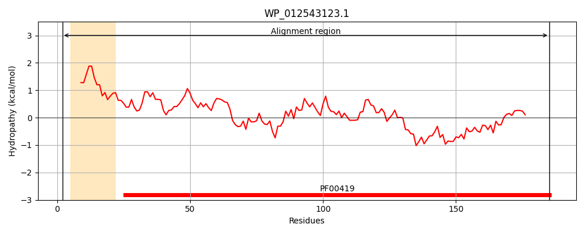
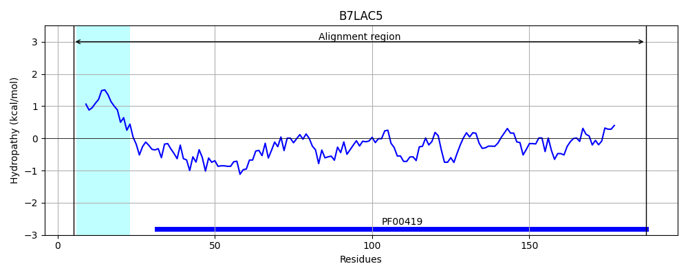
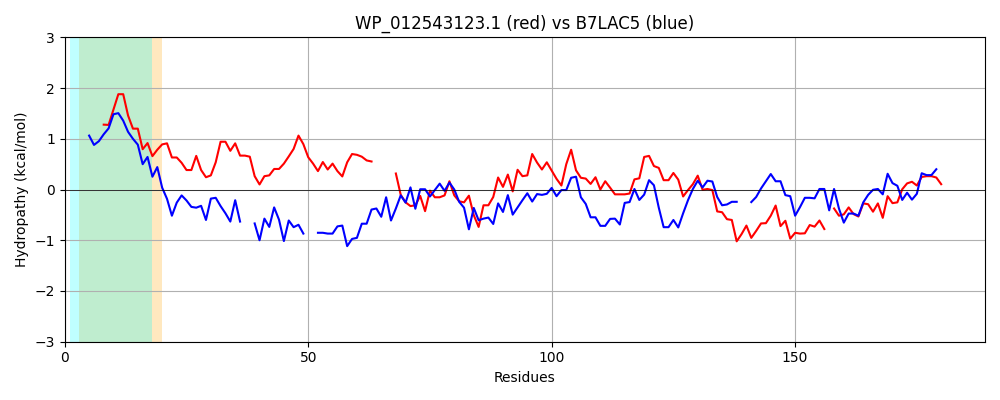

Hit Accession: B7LAC5
Hit TCID: 1.C.80.1.4
Hit Description: gnl|BL_ORD_ID|2029 gnl|TC-DB|B7LAC5|1.C.80.1.4 Putative fimbrial-like adhesin protein OS=Escherichia coli (strain 55989 / EAEC) GN=EC55989_0702 PE=4 SV=1
Mach Len: 189
e:0.000000
Query TMS Count : 1
Hit TMS Count: 1
TMS-Overlap Score: 0.800000
Predicted Substrates:CHEBI:24870;ion, CHEBI:25367;molecule
BLAST Alignment:
Score: 121 , Bit scores: 51 bits, E-value: 2.2e-08, Alignment length: 189, Percentage identity: 25
Query: 2 KKTIVAVMVAASAVLSAQAMATNTAQVTVLGEVADAANSCVVTPTGTLNNGIVQLITVTTAEAN----AEAAGTLFKTQDFGFKVTDCAQGSANPVTGLTVNVAGITSSDKTILDNTAAGGATGIGIGIQRLSDSHRVAFDGSDTMTESYSATTGTQ-LKYTTGYVKVNSATPVTEGPVKGVATFTIDY 185
+KT+ A+ V+ A + ++ GEV +A C + V+L VTT+ N ++A + + + + G +T + + T+ IL+NT+ G ATG+G+ + S+ V G+ T + T+ Q L + +++ ATPVT G V AT+ +DY
Sbjct: 5 QKTLAALAVSLLFTAPVYAADEGSGEIHFKGEVIEAP--CEIHQDDIDKE--VELGQVTTSHINQSHHSDAVAVDLRLVNCDLENSSNGSGGKISKVAVTFDSSAKTTGADPILNNTSTGEATGVGVRLMNKDQSNIVL--GTATPDIDLAPTSSEQTLNFFAWMEQIDQATPVTPGAVTANATYVLDY 187 | Protein Hydropathy Plots: |
|---|
|  |  |
Pairwise Alignment-Hydropathy Plot:
|
|---|
|  |